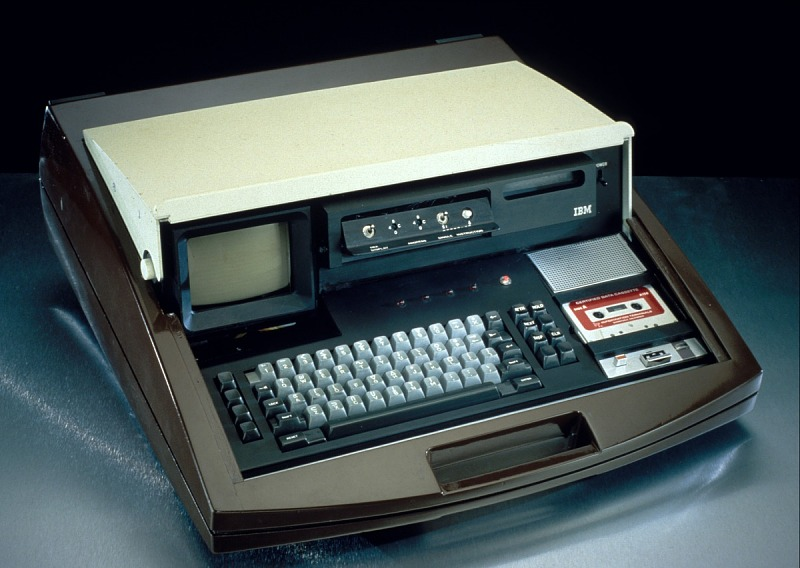
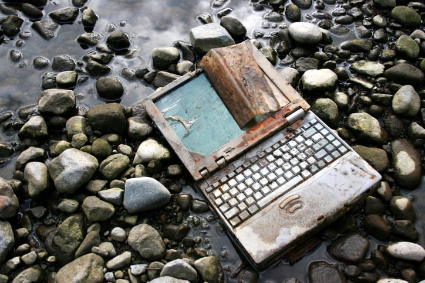

LAPTOPS👩💻
💡FUN FACT :
41.8 million tons of electronic waste was generated across the globe in 2014. One quarter of that
figure or 9.3 million metric tonnes is made up of smaller, personal electronic devices like smartphones,
tablets and laptops.
What is a Laptop?
A laptop, laptop computer or notebook computer is a small, portable personal computer (PC) with a screen
and alphanumeric keyboard. Unlike desktops, laptops use a significantly reduced amount of energy due to
their few/built-in parts like the monitor and the use of CPUs meant to maintain battery life. The toxins
in
laptops end up in landfills instead of the recycling centre. If these toxins end up in a landfill
instead of a recycling centre they can contaminate groundwater, surface water or the soil.These harms show
the need to take responsibility for the earth and stop these damages.
Brief History

Personal computers have gone a great way along the path of history, they first became viable in 1971
using
the technology of the times. Imagined by a researcher in 1972 at Xerox PARC research centre which produced
many revolutions. He designed it in his papers and named it ‘Dynabook’. The first prototype was the AMD
special computer APL Machine Portable (SCAMP). learn more
IMPACTS OF LAPTOPS ON THE ENVIRONMENT

The hazards of laptops
Many people think laptops produce hardly any harm. The truth is it is filled with harmful chemicals and
heavy metals. Common chemicals found in laptops include:
- Lead
- Mercury
- Chromium
- Cadmium
- Brominated flame retardants
- Bromine
This list of chemicals is highly carcinogenic exposure can cause a number of serve health concerns such
as
organ failure and brain damage.
Though these do not pose a direct risk to our health while on laptops. Instead, when they enter landfills
instead of being recycled properly the screens, boards and metals that contain these hazardous chemicals
are
crushed and compacted, resulting in toxins leaking out—oftentimes into our soils and waters.
Through being absorbed by plants these hazards enter the chain of both animals and humans causing. Many of
these harmful chemicals are unknown to you but even ones like copper and cobolt that are heavily used in
your leptop still have harmfull effects. learn
more
It can cause:
vomiting, nausea, abdominal pain, and/or diarrhoea.
kidney and liver damage in high amounts
Inhaling copper dust, sprays, or crystals can irritate your nose and throat causing dizziness and
headaches. People who have ingested these substances have gotten very sick and/or died.
This can cause:
allergic dermatitis and asthma
inflammation and fibrosis of the lung as (hard metal disease) that can become irreversible and lead to
an early death
occasional instances of heart disease (cardiomyopathy)
possible effect on thyroid function, with enlargement of the thyroid gland.
SOLUTIONS TO MITIGATE LAPTOP E-WASTE ON THE ENVIRONMENT
- ✅Repurpose
Instead of throwing away your laptops, you can do cool things with it. Below is a video link that may
inspire you greatly.
- ✅Disposal
When replacing our laptops it is very important to send your electronics to recycling facilities where
they can be properly disassembled and reused.
These are the National Solid Waste Authority Management Authority (NSWMA) offices in Kingston
(Half-Way-Tree Road) and Spanish Town (King Street); and Dermason Plaza, Independence City in Portmore
Companies such as Amazon, Bestbuy and Staples have programmes to trade in laptops and some other
electronics.learn more
Friendly reminder: Wipe the memory on the device and factory reset your mobile device
before reselling, donating, or giving it away.
- ✅Purchasing energy star rated appliances
The Environmental Protection Agency's (EPA's) Energy Star Program offers rebates when you discard old
appliances and purchase new energy-efficient alternatives. In addition to being environmentally
responsible, Energy Star appliances use less electricity, which lowers monthly electric costs. The next
time when you purchase laptops or other appliances, opt for Energy Star models.
- ✅Prevention
Solely replacing a laptop with new model results in the environmental effects and cost mentioned in the
is
the article. Even super-efficient models will provide a very limited carbon footprint reduction. When
shopping ensure the model you buy is TCO certified. An IT-Based
certification helps products to reduce the
environmental and social impact from manufacturing to disposal.
When shopping for a new laptop, look for models that are TCO certified. This IT-based certification
helps
products significantly reduce their environmental and social impacts through every stage of a product’s
life, from manufacturing to disposal. learn
more
-Save the environment and encourage sustainability and restoration!-